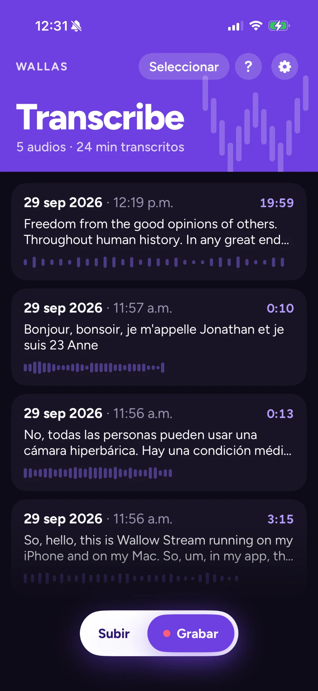
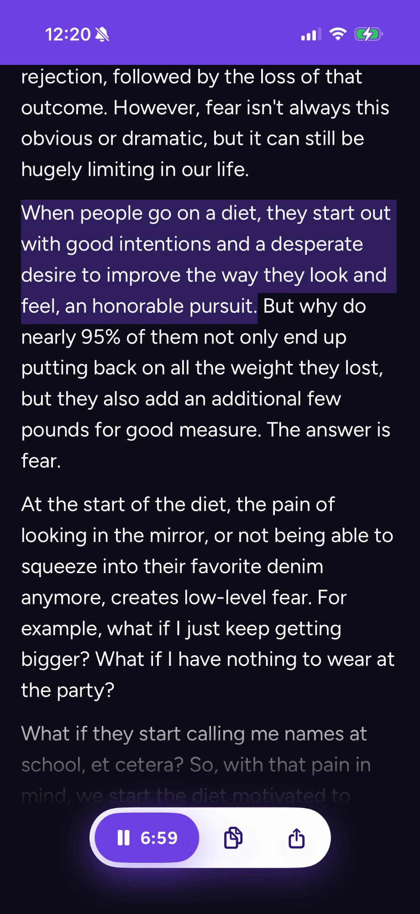
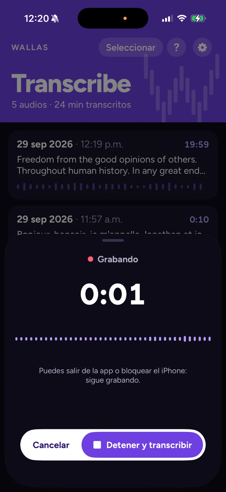

App gratis para iPhoneFree iPhone app
Lee tus notas de voz.Read your voice notes.
Wallas Transcribe convierte audios en texto dentro de tu iPhone. Para personas con implante coclear o auxiliares auditivos. Privada y sin anuncios.
Wallas Transcribe turns audio into text right on your iPhone. Made for people with cochlear implants or hearing aids. Private, with no ads.
Requiere iPhone con iOS 26 o posterior.Requires iPhone with iOS 26 or later.
- GratisFree
- Sin anunciosNo ads
- Sin cuentasNo accounts
- Todo en tu iPhoneAll on your iPhone
Para quién esWho it’s for
Hecha para tiMade for you
Si usas implante coclear (IC) o auxiliares auditivos (AA), sabes que un audio puede costar mucho trabajo. Con Wallas Transcribe no tienes que adivinar: lo lees.
If you use a cochlear implant (CI) or hearing aids (HA), you know audio messages can be hard work. With Wallas Transcribe you don’t have to guess: you read it.
Cómo funcionaHow it works
Así de fácilThis easy
Funciona con WhatsApp, Telegram y cualquier app que permita “Compartir” un audio.
Works with WhatsApp, Telegram and any app that lets you “Share” audio.
- Mantén presionada la nota de voz.Press and hold the voice note.
- Toca “Compartir” y elige Wallas Transcribe.Tap “Share” and choose Wallas Transcribe.
- Lee el texto. Aparece solo.Read the text. It appears on its own.
La appThe app
Míralo en acciónSee it in action



FuentesSources
Transcribe desde donde seaTranscribe from anywhere
-
Notas de vozVoice notes
Desde WhatsApp, Telegram y cualquier app con “Compartir”.
From WhatsApp, Telegram and any app with “Share”.
-
Archivos y videosFiles and videos
Sube audios desde Archivos o videos desde Fotos. La app saca el audio y lo transcribe.
Add audio from Files or videos from Photos. The app pulls out the audio and transcribes it.
-
Muchos idiomasMany languages
Español de México por defecto y cualquier idioma que reconozca tu iPhone. Detecta el idioma solo o te pregunta cada vez.
Mexican Spanish by default, plus any language your iPhone recognizes. It detects the language or asks you each time.
GrabaciónRecording
Graba conversaciones y clasesRecord conversations and classes
-
Con la pantalla bloqueadaWith the screen locked
Sigue grabando aunque bloquees el iPhone o abras otra app.
Keeps recording when you lock your iPhone or open another app.
-
Siempre a la vistaAlways in view
El tiempo aparece en la pantalla bloqueada y en la Isla Dinámica.
The time shows on the Lock Screen and in the Dynamic Island.
-
Llamadas sin problemaCalls, no problem
Si entra una llamada, se pausa. Al colgar, continúa sola.
If a call comes in, it pauses. When you hang up, it resumes on its own.
-
Transcribe en segundo planoTranscribes in the background
Ve el avance en la pantalla bloqueada mientras haces otra cosa.
See the progress on the Lock Screen while you do something else.
LecturaReading
Pensada para leer y escucharBuilt for reading and listening
-
Toca una fraseTap a sentence
El audio salta a ese momento. Útil si escuchas una parte con tu IC o AA.
The audio jumps to that moment. Handy if you hear part of it with your CI or HA.
-
Escucha, copia y compartePlay, copy and share
Reproduce el audio original. Copia o comparte el texto.
Play the original audio. Copy or share the text.
-
Audios repetidosRepeated audio
Si el mismo audio llega otra vez, lo marca como DUPLICADO y usa el texto que ya tienes.
If the same audio arrives again, it’s marked DUPLICATE and reuses the text you already have.
-
Puntuación automáticaAutomatic punctuation
Comas y puntos en su lugar. La puedes apagar.
Commas and periods where they belong. You can turn it off.
-
Texto grandeLarge text
Compatible con el tamaño de texto de tu iPhone. Modo claro, oscuro o automático.
Supports your iPhone’s text size (Dynamic Type). Light, dark or automatic mode.
PrivacidadPrivacy
100 % privada100% private
El reconocimiento de voz ocurre dentro de tu iPhone. Tu audio nunca sale del teléfono.
Speech recognition happens on your iPhone. Your audio never leaves the phone.
- Sin cuentas ni registro.
- Sin anuncios.
- Puedes no guardar el audio original y quedarte solo con el texto.
- No accounts, no sign-up.
- No ads.
- You can skip saving the original audio and keep only the text.
Descárgala gratisDownload it free
Para iPhone con iOS 26 o posterior. La primera vez que usas un idioma, se descarga su modelo de voz. Solo esa vez necesitas internet.
For iPhone with iOS 26 or later. The first time you use a language, its speech model downloads. You only need internet that one time.